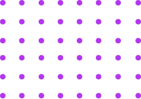

Centralised Analytics Platform:
Centralised Analytics Platform
Go to the Solution:
BOT DnA
The Business Problem
The nature of the Communication Service Provider industry, and its
regulatory environment, makes data collection on price points and
new products difficult
The central pain points identified are:
- 1. Lacking external user and market awareness which leads to an inside-out approach to innovation
- 2. The decision drivers across different customer segments are often not fully comprehended; and
- 3. Unknowns such as preferred core features and price elasticities result in an incomplete view of the customer’s wallet and spending habits
Visit Partner Site :
www.website.com/

What is Centralised Analytics Platform
Centralised Analytics Platform info Deloitte’s Centralised Analytics Platform is a bespoke innovation platform used to enable clients to insightfully adapt their product & price strategies and stay ahead of their competition. Centralised Analytics Platform enables clients to optimise revenue and go to market expenditure by reaching the right customer with the right product at the right price.
Centralised Analytics Platform
Price and product decisions are often made with an “inside-out”
approach, with no clear impact on market share or potential uptake.
Contact us to better understand how our tool can help your organisation!
Contact us to better understand how our tool can help your organisation!
